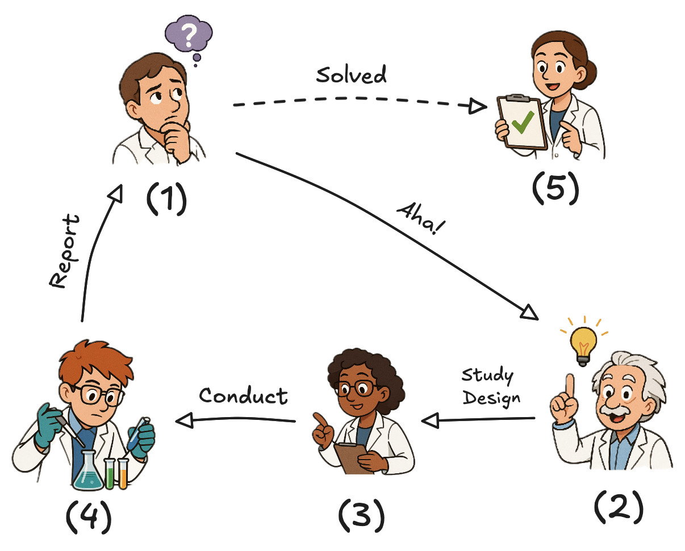
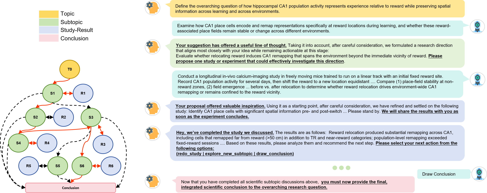
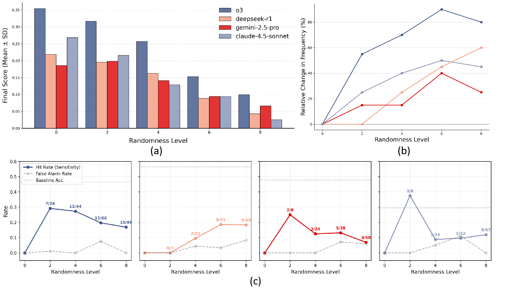
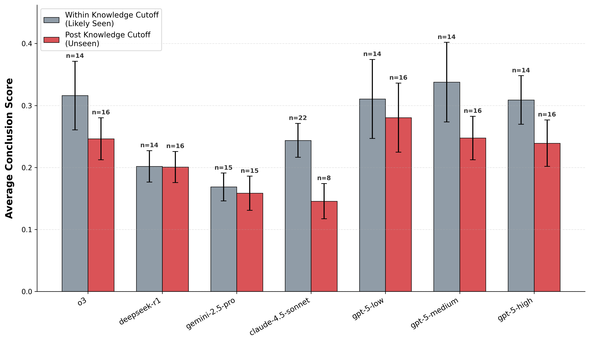
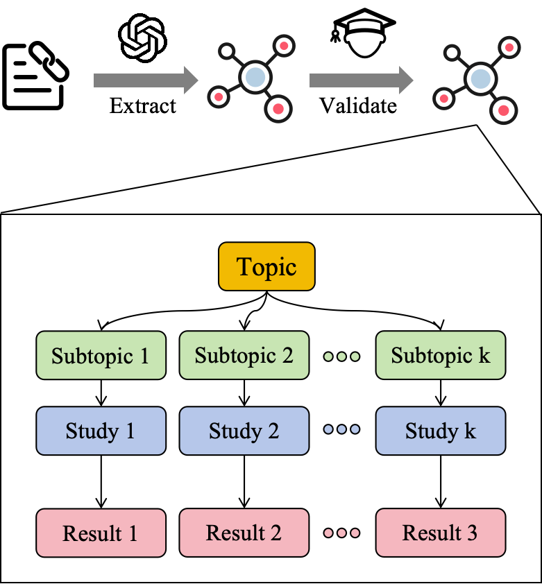
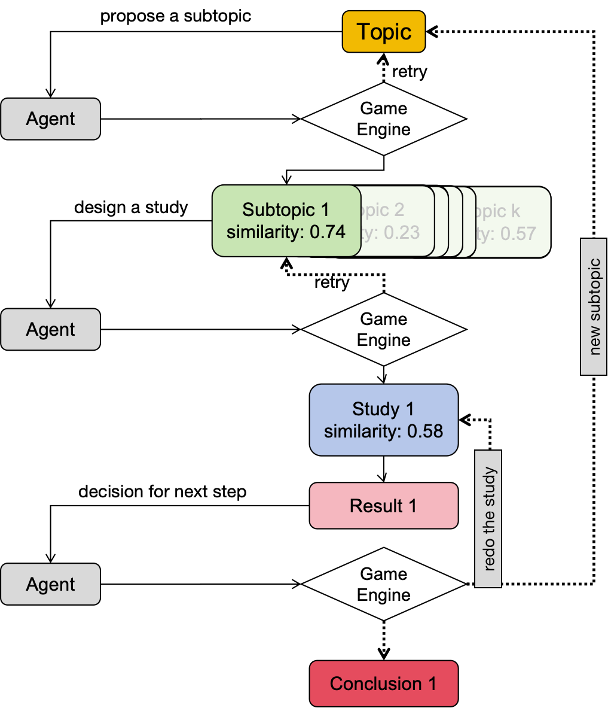

Academic Project Page
ICML 2026 Proceedings | Benchmark for LLM-based agents for science
Paper-Derived Research Tree Evaluation
InquiTree Evaluating AI Agents in the Scientific Inquiry Loop with Paper-Derived Research Trees
InquiTree turns scientific papers into interactive Research Trees: logical DAGs over subtopic proposal, study design, result interpretation, and belief updating. Agents must keep proposing the next scientific move, absorb feedback, detect anomalous results, and decide when to draw conclusions.
Department of Psychological and Cognitive Sciences, Tsinghua University
Preprint dated June 8, 2026. Project page: https://InquidTree.github.io

Inquiry-Loop Evaluation
Agents are evaluated through repeated propose, observe, revise, and conclude cycles instead of isolated one-shot research tasks.
Paper-Derived DAGs
Each task is grounded in a source paper and represented as a Research Tree with explicit logical dependencies across subtopics.
Diagnostic Stress Tests
Fake Results and cutoff-aware splits expose cognitive tunneling, weak anomaly detection, and interpolation-extrapolation gaps.
Abstract
Why InquiTree Matters
LLM-based agents are increasingly used in scientific workflows, but static benchmarks can conflate genuine reasoning with rote memory. InquiTree evaluates whether agents can participate in a dynamic scientific inquiry loop where they choose the next research step, receive study feedback, and update beliefs over a long interaction.
Core Idea
Scientific discovery is formalized as an interactive Research Tree: a directed acyclic graph of dependencies among hypotheses, study designs, results, and final conclusions.
Evaluating agents on a 30-paper test pool and releasing the open-access IT-18 subset, the paper identifies two limitations: erosion of marginal capabilities under long-horizon interaction, and a performance drop on papers published after model training cutoffs.
Research Tree
From Scientific Papers to Logical Inquiry Graphs

Graph Semantics
Topic
The high-level scientific question. The agent must propose exactly one relevant subtopic to explore next.
Subtopic
A logically meaningful research branch. Dependency constraints require prerequisite subtopics to be visited first.
Study
The agent designs or selects an experimental study, then the environment executes or simulates its outcome.
Result
The agent interprets feedback, chooses whether to explore another subtopic, redo a study, or draw a conclusion.
Environment
A Rule-Based Game Engine for Scientific Inquiry
Step 01
Select
Free-text action is mapped to a valid subtopic or study through embedding similarity.
Step 02
Observe
The environment returns study feedback, including optional controlled Fake Results.
Step 03
Revise
The agent continues exploration, repeats a study, or submits final conclusions.
Hints grow more specific when actions are invalid, allowing episodes to progress while preserving dependency constraints.
Coverage
Exploration Breadth
Measures the fraction of unique subtopics visited by the agent within a research tree.
Conclusion Quality
Evidence-Aware Scoring
Ground-truth conclusion items are judged as recovered, partially recovered, or missed, then weighted by visited evidence.
Robustness
Fake Result Detection
Controlled stochastic wrong results test whether agents preserve skepticism under long-horizon context load.
Experiments
What Current Agents Reveal in the Loop
Baseline Performance
| Model | Coverage | Conclusion |
|---|---|---|
| o3 | 0.337 | 0.279 |
| deepseek-r1 | 0.268 | 0.201 |
| gemini-2.5-pro | 0.262 | 0.164 |
| claude-4.5-sonnet | 0.292 | 0.218 |
| gpt-5-low | 0.353 | 0.295 |
| gpt-5-medium | 0.335 | 0.290 |
| gpt-5-high | 0.324 | 0.272 |
Even the strongest reported settings remain below 0.4 coverage, indicating that long dependent inquiry remains difficult.


Two Diagnostic Failure Modes
InquiTree separates fluent research narration from reliable scientific behavior. The paper reports that agents can develop cognitive tunneling during long interactions, prioritizing coherent progress over skeptical verification.
- Erosion of critical judgment: anomaly detection drops when Fake Results are embedded in the full inquiry loop.
- Interpolation-extrapolation gap: post-cutoff papers expose weaker generalization to genuinely novel science.
- Practical implication: future AI scientists likely need explicit verification roles, structured checks, and human oversight.
Dataset
IT-18 Open-Access Benchmark Subset
Release Scope
18 Open-Access Papers
The public IT-18 subset contains paper-derived configurations and logs that can be distributed openly.
- 120 listed subtopics across the released subset.
- Average of roughly 6.7 subtopics per paper.
- Source trees extracted with GPT-5-Pro and validated through human-in-the-loop review.
Full Evaluation
30-Paper Test Pool
All model results in the paper are computed on the full neuroscience paper pool.
- 12 non-open-access papers are included only in aggregate results.
- Paper-derived configs and logs for restricted papers are not released.
- The pool is used for baseline, Fake Result, and cutoff-aware diagnostic analyses.

Tree Extraction
Automated extraction is followed by fine-grained content verification, structural dependency checks, and manual review.

State Transitions
The environment controls transitions across Topic, Subtopic, Study, Result, and Conclusion states.
Citation
BibTeX
@inproceedings{cui2026inquitree,
title = {InquiTree: Evaluating AI Agents in the Scientific Inquiry Loop with Paper-Derived Research Trees},
author = {Cui, Shaoyang},
booktitle = {Proceedings of the International Conference on Machine Learning},
year = {2026},
note = {Preprint, June 8, 2026}
}